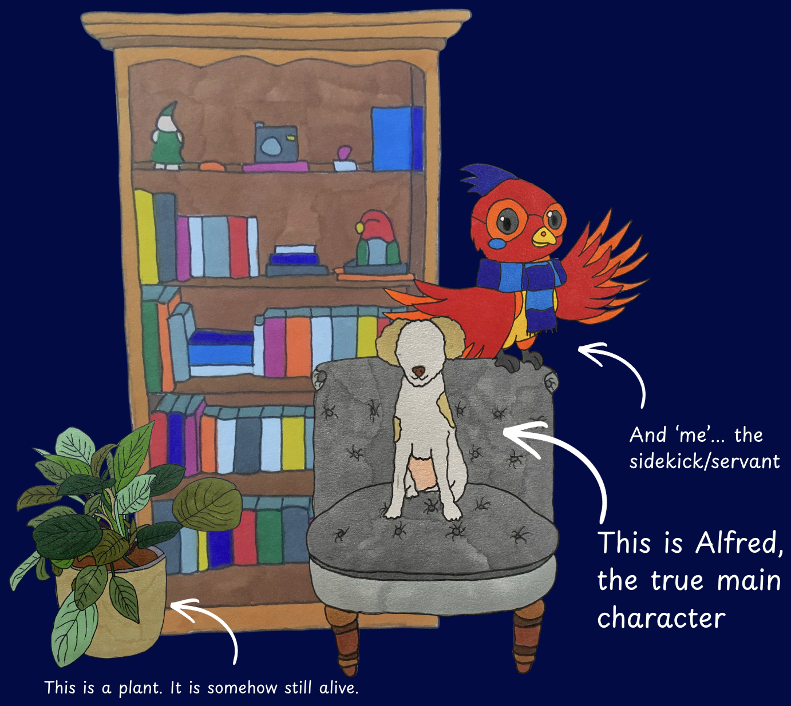

WELCOME TO...
COSYFYNIX
My (slightly conceited) cosy little nook to share my hyper-fixations and hobbies. Hopefully this will make said hyper-fixations feel less like a long string of lost dopamine and more like good investments after all.